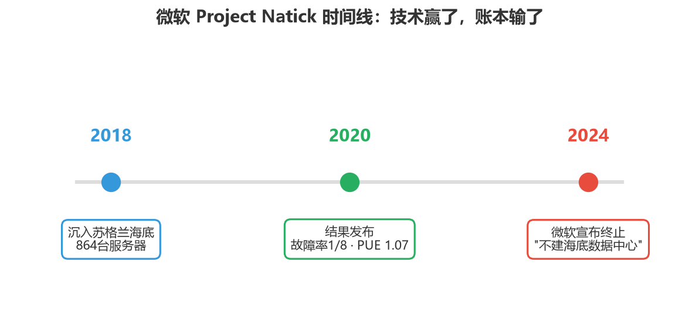
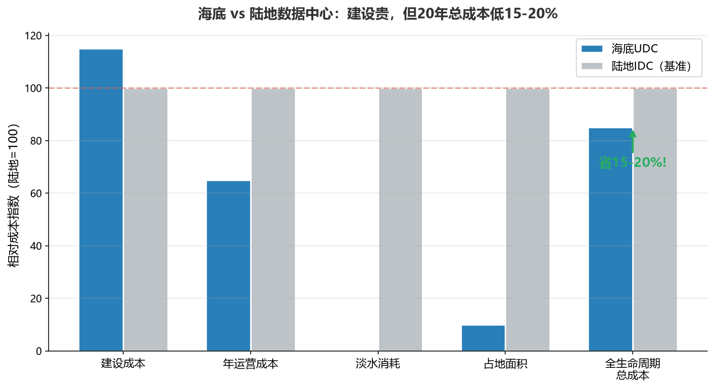

小K·AI行业数据分析 | 2026-06-28
2018年，微软把一个数据舱沉到苏格兰海底，叫Project Natick。864台服务器，泡了整整两年。结果技术上大获全胜——故障率仅为陆地对照组的八分之一（水下仅6台故障，陆地8台故障，注：陆地对照组仅135台，样本量不对称，1/8为近似比值）；PUE做到1.07，行业平均是1.48；省电30%。
但2024年6月，微软正式宣布项目终止。负责人Noelle Walsh只丢了一句"我们不会在世界任何地方建海底数据中心"，至于为什么——没说。
原因其实不复杂，三件事叠在一起：
维护是噩梦。 陆地上服务器坏了，工程师带个扳手五分钟换个硬盘。海底呢？派潜水员或机器人下去。AI时代芯片一年一换代，海底罐子放下去好几年才能捞上来一次，硬件迭代完全跟不上。
扩展性太差。 海底数据舱是固定容量的罐子，放下去多少就是多少。陆地数据中心今天加100台，明天扩1000台。微软是云服务商，卖的就是弹性——固定容量的罐子根本没法满足。
战略重心转了。 微软的钱和人全扑在AI超算和模块化核反应堆上了。海底数据中心这个方向，优先级排不上号。
所以微软不是"技术上做不成"，是商业上算不过账——维护贵、扩展难、优先级低，三件事一加，不干了。
微软停了，中国商用了。靠的不是单点技术领先，是四件套同时到位——这是产业链的系统性碾压。
第一件：海上风电。 中国海上风电累计并网5204万千瓦，占全球56%。第二名到第十名加起来都没中国多。美国2025年几乎零新增，拍卖取消、项目推迟。海底数据中心最理想的模式是海风直供——连输电成本都省了。美国连海风配套都没有。
第二件：海工装备。 中国造船产量全球第一，海洋工程装备产业链齐全。造一个海底数据舱的成本，可能只有美国的几分之一。技术再牛，造一个亏一个，也没法商业化。
第三件：政策。 从"东数西算"到"东数海算"，算电协同是国家战略方向。海南、上海、广东都在推海底数据中心试点，政策绿灯全开。
第四件：真实需求。 全国数据中心一年用电量超过3000亿度，相当于2.5个三峡电站的发电量，而且每年还在以20%以上的速度增长。上海、深圳这些沿海一线城市——没地、没电、没能耗指标，新建一个大型数据中心的审批难度不亚于重工业项目。海底数据中心不占陆地、不耗淡水、用海水散热——正好打在痛点上。
这四件事缺一件都成不了。微软有技术，但缺海风产业链、缺海工成本优势、缺政策推力、也缺资源约束下的真实需求。
已经跑通的商用项目，都是一家叫海兰信的公司在做——全球唯二、国内唯一有全套商用技术，2022年6月29日被美国列入实体清单。赛道是好赛道，公司是核心玩家，但业绩是大订单模式季度波动大，三亚、阳江增量项目还在建设期，10.5亿收购海兰寰宇还在审批。以上仅为产业分析，不构成投资建议。
最反常识的发现——海底数据中心，全算下来，比陆地还便宜。
| 维度 | 海底UDC | 陆地IDC |
|---|---|---|
| 建设成本 | 贵10-15% | 基准 |
| PUE（能效） | 1.08 | 1.48 |
| 年运营成本 | 低30-40% | 基准 |
| 淡水消耗 | 零 | 2.3MW年耗4万吨 |
| 占地面积 | 省90%+ | 基准 |
| 全生命周期总成本 | 低15-20% | 基准 |
建设确实更贵，但运营省——省电费、省水费、省土地、省人工，设备寿命还更长。20年算下来反而便宜15%-20%。贵的是建设，省的是一辈子。
微软有技术，中国有产业链。技术能证明"做得到"，但只有产业链才能证明"划得来"。海底数据中心这个故事最大的教训不是谁做成了谁没做成——是别看谁先下水，看谁能留在水里。


数据来源：- 微软Project Natick：微软官网技术白皮书、Nature合作论文（2020） - 微软叫停：微软2024年6月官方声明、Noelle Walsh公开表态 - 故障率/855台对比：微软Natick项目最终报告（注：陆地对照组135台，样本量不对称，1/8为近似比值） - PUE数据：海兰信陵水项目公开数据 + 微软Natick报告 - 海上风电装机：中国风能专委会《海上风电回顾与展望》2026（并网口径5204万千瓦） - 美国海上风电停滞：GWEC全球海上风电报告2026 - 数据中心用电量：中国信通院《数据中心白皮书》2025 - 海兰信项目信息：公司公告、三亚崖州湾中标公示、陵水项目公开报道 - 实体清单时间：美国商务部BIS 2022年6月29日公告 - TCO/成本对比：海兰信公开路演材料 + 行业研报综合